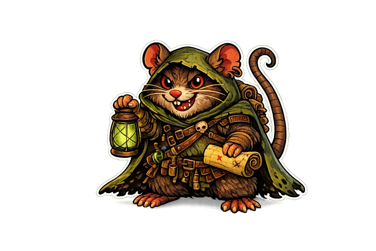
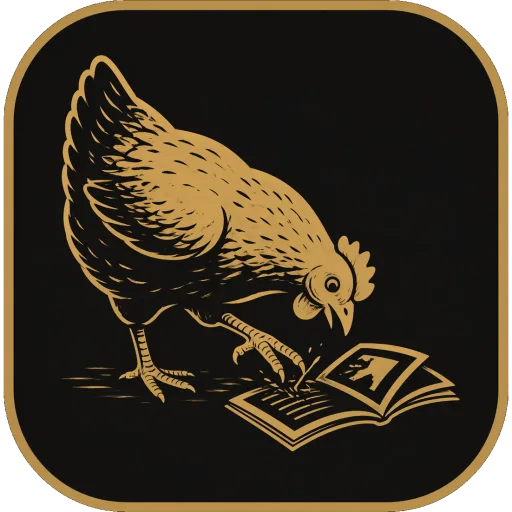
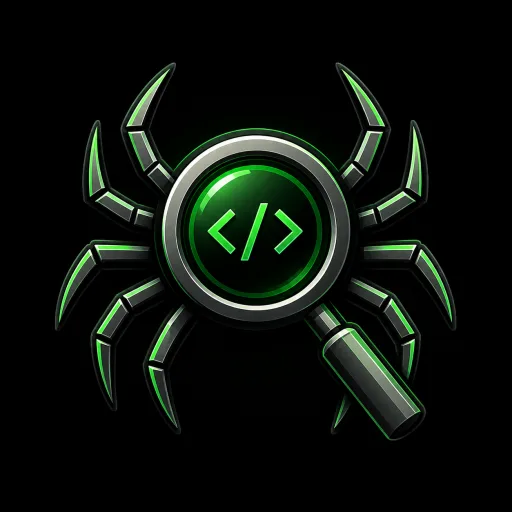

Warhamster.app
A lightweight virtual tabletop for quick battlemaps: sketch rooms, drop assets, move tokens, and keep everyone in sync in real time. Includes rooms, snapshots, and an uploadable asset library.
A home for tabletop utilities, zine tools, indie experiments, Project Zomboid mods, and whatever else climbs out of the workshop with a wrench in one hand and a questionable idea in the other.
The current front-door: a few things that represent what I’m building right now.

A lightweight virtual tabletop for quick battlemaps: sketch rooms, drop assets, move tokens, and keep everyone in sync in real time. Includes rooms, snapshots, and an uploadable asset library.

A Flutter mini-zine planner that turns photos, scans, or PDFs into an 8-page foldable layout. Reorder pages, pad to multiples of 8, preview spreads, and export a print-ready PDF.
A collection of mods and utilities: prototypes, quality-of-life tweaks, server helpers, and small tools for making Knox Country easier to run and more fun to break.

A small experiment in scanning and mapping the messy edges: crawling, collecting, and turning signals into a reviewable report.
A handful of buckets. The inventory lives on the projects page.
Small desktop/web things with a UI: tabletop helpers, zine workflows, scratch tools.
Project Zomboid mods, prototypes, and the tooling that makes shipping them less painful.
Zines, imposition, PDF workflows, and small utilities that turn “I should print this” into a file.
Automation, scanners, helpers, and “make it observable” experiments.
What you can click today. The rest is on the bench.
Sixes & Sevens Studio is a place for practical software, oddball creative tools, game mods, tabletop utilities, and small systems built with a bias toward ownership, repairability, and not locking people into nonsense.
The vibe: useful first, pretty second, corporate polish never. A little haunted, a little handmade, and ideally something you can actually run, print, mod, host, or take apart.
Tip Jar
Sixes&Sevens Studio is a pile of indie apps, zines, tabletop tools, game mods, and weird little utilities. If something here helped you, made you laugh, or saved you five minutes, you can toss a few bucks in the jar.
Support on Ko-fi